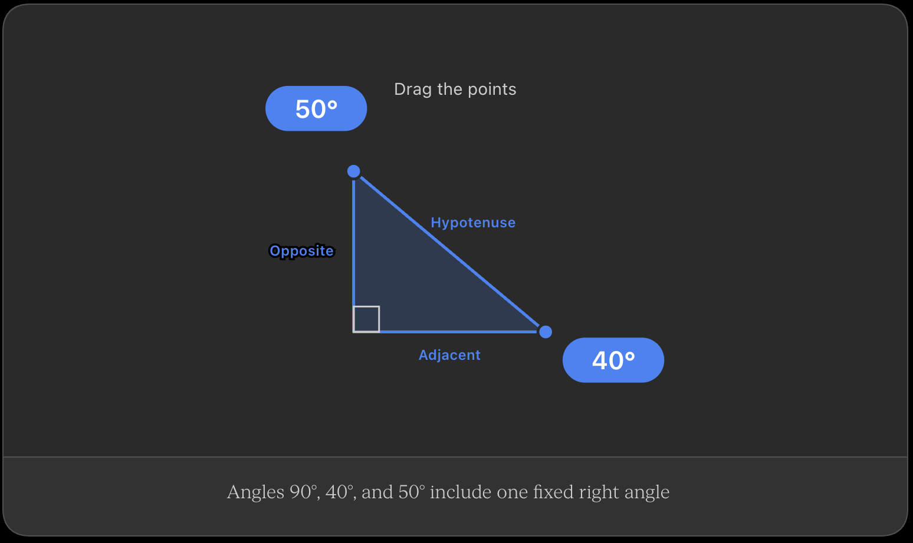

The important parts
Imagine a triangle like this:
/|
/ |
/ | ← opposite
/ |
/ |
/_____|
adjacent
90°
It has three sides:
- Hypotenuse — the side opposite the 90° angle. It is always the longest side.
- Adjacent side — the side next to the angle you're interested in.
- Opposite side — the side across from the angle you're interested in.
Why is it called "right"?
"Right" means 90 degrees in geometry.
So:
Right triangle = triangle containing a 90° angle.
For example, if the angles are:
30° + 60° + 90° = 180°
that's a right triangle.
Connection to cosine
This is especially important for what you were asking about cosine 60°.
If we choose the 60° angle, cosine tells us:
cos(60°) = adjacent/hypotenuse
And because:
cos(60°) = 0.5
the adjacent side is half the length of the hypotenuse.
So if the hypotenuse is 10:
adjacent = 0.5(10) = 5
That's where the 0.5 you were asking about comes from.